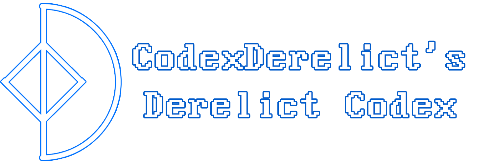

| Linguistics, Math, Computers & Stuff | Video Games, Music, Recreation & Stuff | Opinions, Thoughts, Neural Misfirings & Stuff | Goodies, Projects, Links & Stuff |
My name's Omar. I'm a 22 year old from the Emirates, with an interest in language, mathematics, technology and where they all combine!
I speak Arabic, English (native), German (B2) and French (C1).
Around that time is when I got into mathematics. I had believed I was unable to think mathematically (despite being good at it as a child, it was just arithmetic). I began self-studying mathematics with an interest in seeing how things work and developing intuition for mathematical rules and processes. It hit me, eventually, that the same kind of pattern recognition and rules for legal construction are those I've already internalized when learning a language. Curiously, I decided to explore the relations between language and math, stumbling upon formal language theory, formal semantics and, of course, NLP.
I like retro video games, anime and manga, heavy metal and progressive rock (as well as other kinds of music). The following are a good number of examples:
In terms of video games, I'm quite fond of Chrono Trigger, DOOM 64, the classic Ninja Gaiden games on the NES, golden age arcade/2nd and 3rd gen stuff.
In terms of anime, some of my favorites include Puella Magi Madoka Magica, Steins;Gate, Space Battleship Yamato, Cowboy Bebop, Higurashi no Naku Koro Ni.
In terms of music, I like Dream Theater, Death, Carcass, Mr. Bungle, Rush, Cardiacs, Intestine Baalism and Edge of Sanity, Boards of Canada, Pendulum and Aphex Twin.
My work sits in the crossroads of historical linguistics and natural language processing. I've written an Akkadian noun analyzer with constraint-based state disambiguation, and my current project as of February 2026 is a hybrid dependency/constraint-based Latin parser. What I'd like to do in the future is low-resource NLP, neuro-symbolic AI and low-level/systems programming as well. I'm especially interested in combining symbolic, statistical and neural NLP for digital humanities work, especially in relation to Semitic languages. My interest both lies in computational comparative analysis of Semitic languages as well as the development of NLP, machine translation and text analysis pipelines for low-resource and grammatically complex languages, and especially Arabic.
Arabic NLP, a tradition that has existed since the 1980s, still faces problems due to Arabic's complex grammatical structure, vernacular Arabic being different from literary Arabic, code-switching with English and French, the differences between vernacular dialects (some of which have low mutual comprehension, for example Darija and Gulf Arabic, my dialect) among other things.
This site is a receptacle for all of my personal projects, both academic and not. I plan on putting up reports about projects of mine and update logs, writings about my interests, as well as opinion pieces on academia. My projects can all be found on my Github page, @codexderelict.
The best way to reach me is my email, codexderelict@proton.me, or my Twitter, @codexderelict. I accept messages about anything, academic or not.